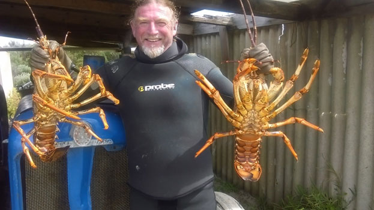

|
|


Jim
Ewing
| Published titles : | Two
That Got Away |
|||||||
|
||||||||
A multifarious existence has seen Jim Ewing work on and under oceans as a merchant seaman, fisherman and diver. A few too many other vocations include professional sportsman (Aussie Rules football and boxing), journalist, psychiatric nurse, stockman, oil rig worker, bulldozer operator, actor, playwright, farmer.
He has had several plays produced for stage and radio, and his short stories have appeared in publications as diverse as Penthouse and Meanjin. 'Two That Got Away' is his second published novel.
When not on the wallaby in some obscure corner of Planet Earth he calls south-west Victoria home.

‘Jim
Ewing belongs to that earthy, robust tradition of Henry Lawson, C.J.
Dennis, Lennie Lower, and Frank Hardy. He has a great ear for dialogue
and revels in wordplay and Aussie vernacular. At a time when Australian
writing is noted for its blandness and correctness, Jim’s work is a
breath of fresh air. It is strong and gutsy and often very
funny—another quality which is sadly lacking in much contemporary
Australian literature.’
John Hooker, former publisher (Penguin, William Collins)
‘Jim
Ewing has a problem—his work is too original and irreverent to suit
Australian publishing elites who desire their Oz literature to, in
appearance and flavour, be emu stew covered by a saccharine European
garnish.’
Carmel Bird, novelist, former literary editor Meanjin
‘Jim
Ewing writes with a spring in his step. The narrative takes you out of
the everyday into lives that are funny, sometimes sad, and revealing.
Characterised by wit, energy, and sharp perception, his writing is wise
and always entertaining.’
John Clarke, writer, actor, satirist, comic genius
‘I
published Australian Short Stories for sixteen years. Jim Ewing’s
stories appeared regularly in the magazine. I regard his talent very
highly and think of him as one of the best exponents of the short story
form, and particularly in regard to his favourite theme, the sea, where
he is better qualified to speak on the subject than anyone I know.’
Bruce Pascoe, novelist/publisher, author of Dark Emu